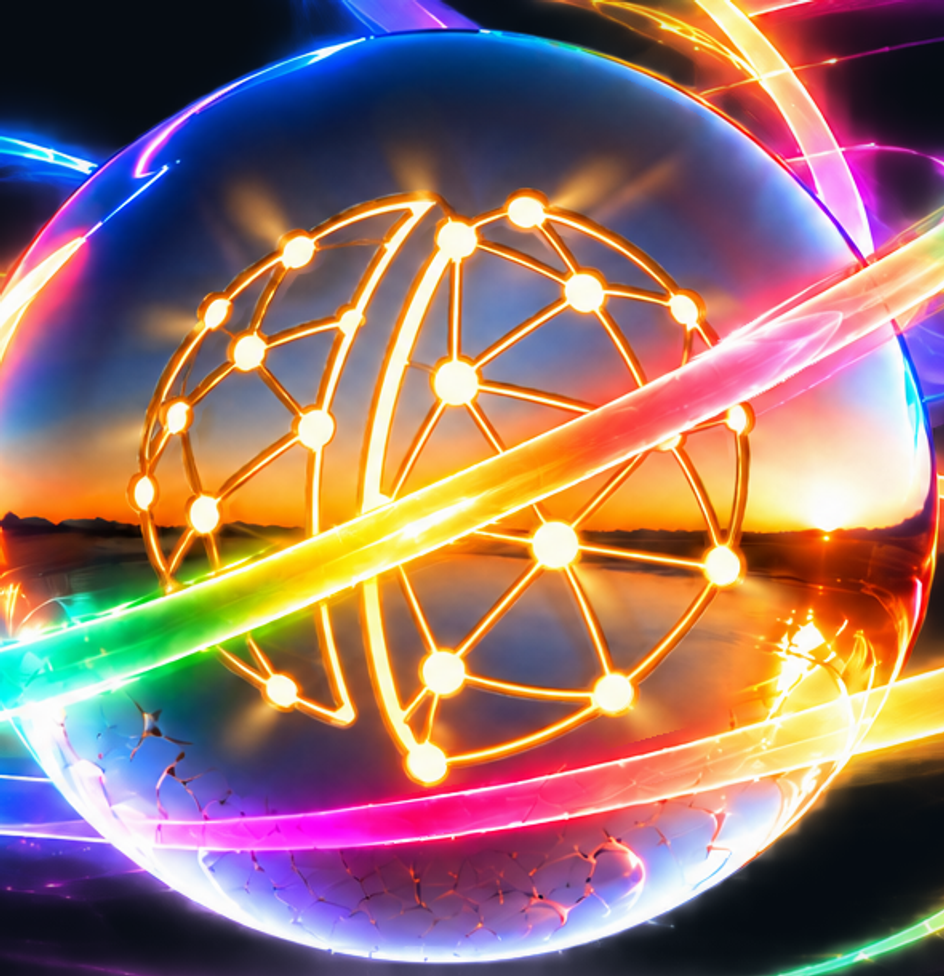
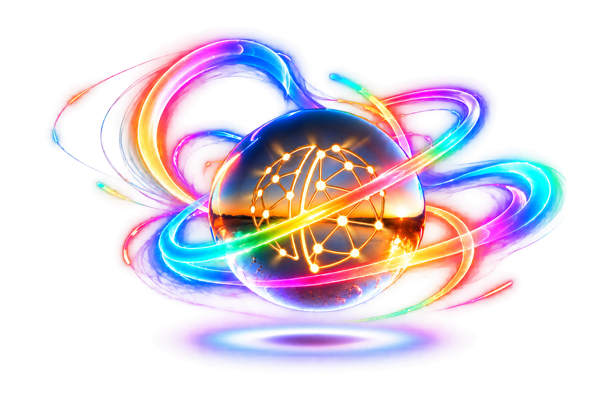
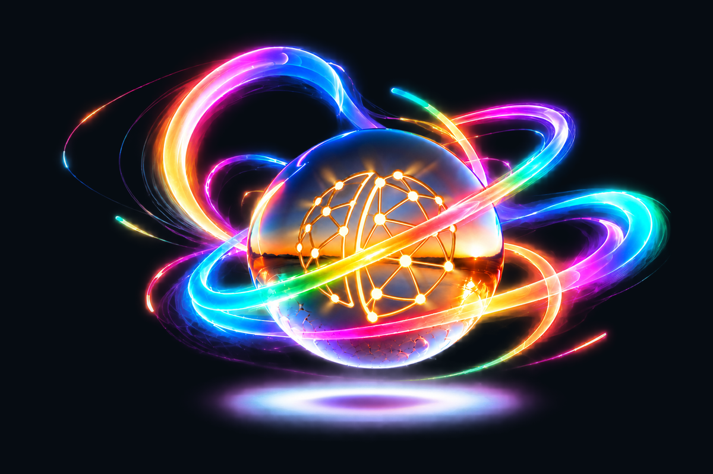
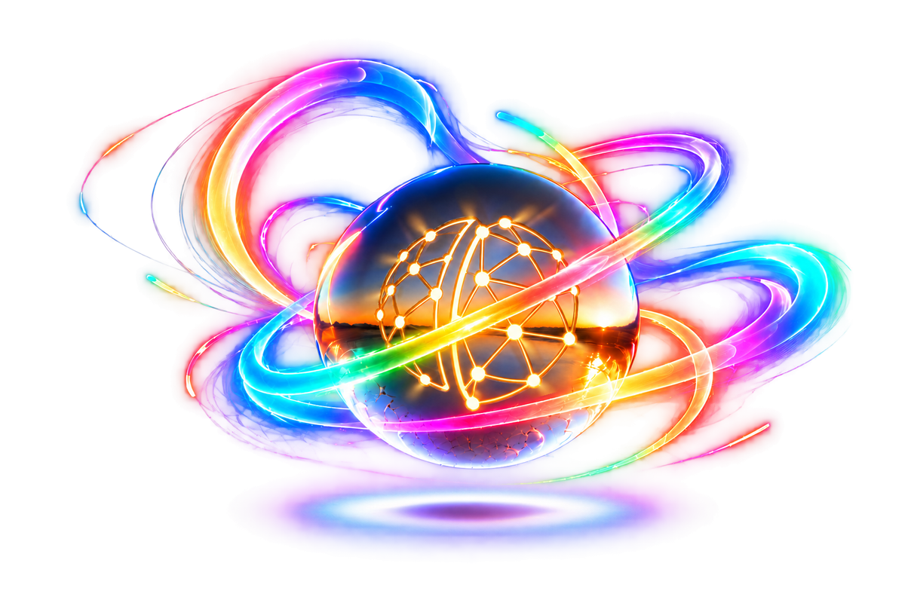

Logo light · review 03
Transparent candidate only · awaiting your review.
Shorter, lower intensity light cones around the logo openings. The locked outer swirl glow is retained.
Download transparent PNG · 3072×2048

Logo detail

Previous material review

Full artwork


